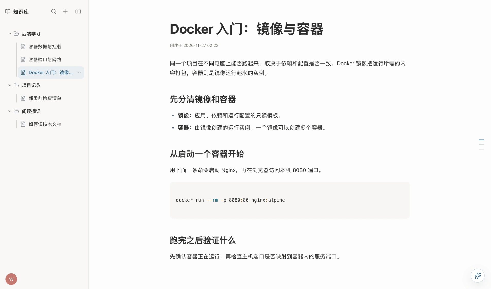
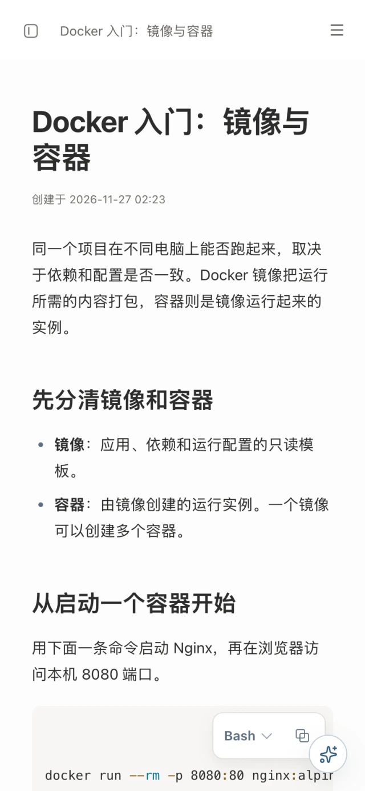
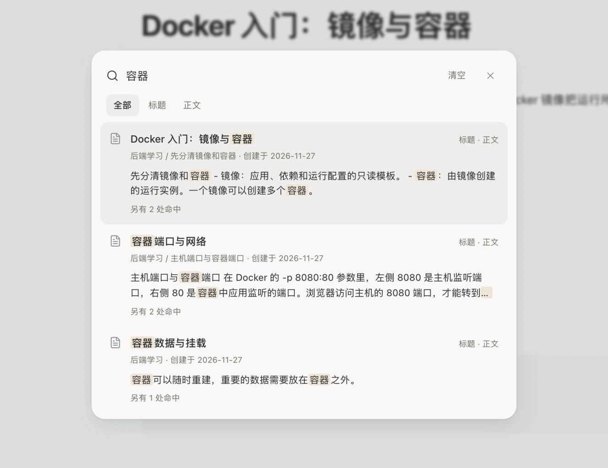
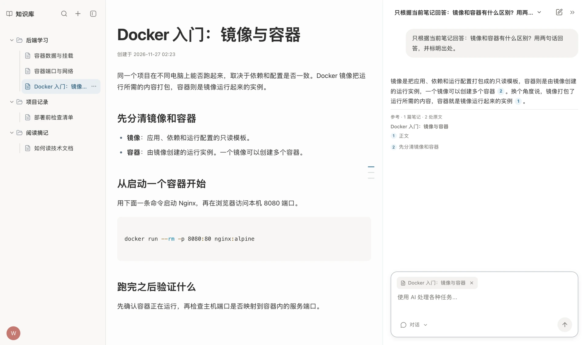

记得一个词，
就能搜到。
在「搜索全部笔记」里输入「容器」，就能看到标题或正文中的匹配片段。点开结果，接着读。


有疑问，就在笔记旁问。
在 AI 助手里引用当前笔记，继续问「镜像和容器有什么区别？」。回答下方列出出处，点击即可回到原文。




在「搜索全部笔记」里输入「容器」，就能看到标题或正文中的匹配片段。点开结果，接着读。

在 AI 助手里引用当前笔记，继续问「镜像和容器有什么区别？」。回答下方列出出处，点击即可回到原文。
